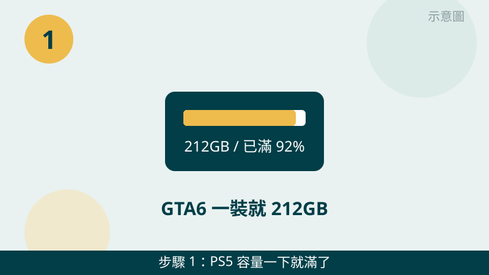
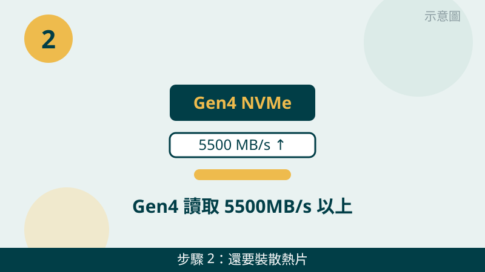
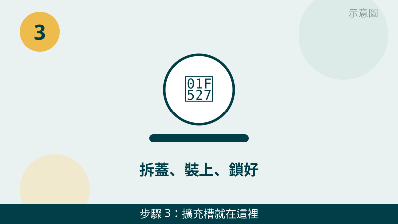
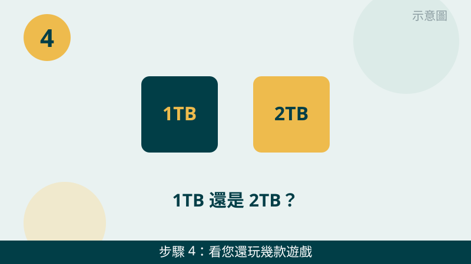
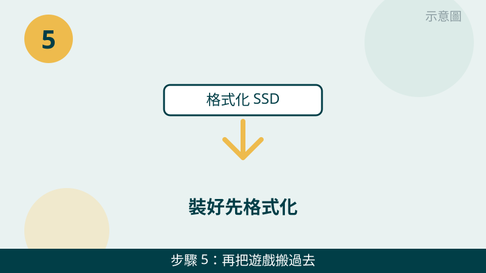

GTA6 俠盜獵車手6 是 2026 年 11 月 19 日上市的大作，首發只有 PS5 和 Xbox Series X/S，台灣標準版 $2,320、終極版 $2,900，安裝最高 212GB。PS5 原本的容量扣掉系統後剩不多，裝完 GTA6 再留幾款常玩的遊戲，空間一下就見底了；與其刪遊戲，不如擴充一顆 SSD。先跟您說明：擴充 SSD 有規格要求，買錯裝不上或跑不滿速度，錢就白花了。
開始之前先跟您說明：費用要看 SSD 容量與品牌型號，傳 LINE 詳談後我們會報一個總價給您確認，不會先拆工資、零件另外算。文章裡不寫 SSD 的行情價，因為行情會變動，正式報價才會列出實際價格；這裡只跟您談方向；檢測費 $300（有修全額折抵），可開立統一發票。
PS5 型號先傳給我們看
把 PS5 是舊版、Slim 還是 Pro，以及現在剩多少空間，拍照傳 LINE 給我們，我們會先幫您看該擴充多少，再報一個總價給您確認。先免費評估、檢測後報價，確認後再決定要不要擴充。
GTA6 PS5 擴充 SSD 6 步：先看空間再決定
- 1. 先看剩多少空間：212GB 不是小數目。請先到 PS5 設定看儲存空間還剩多少。怎麼判斷：GTA6 安裝最高 212GB，扣掉系統更新與存檔預留，剩不到 250GB 就建議擴充，不要等下載到一半才發現裝不下。

示意圖（非官方截圖） - 2. 規格要對：Gen4、讀取 5500MB/s 以上、要裝散熱片。PS5 擴充槽只接受 PCIe Gen4 NVMe SSD，循序讀取要 5500MB/s 以上，容量 250GB 到 8TB，並加裝散熱片。怎麼判斷：買到 Gen3 或沒裝散熱片，裝上去也跑不滿、還容易過熱降速；買之前先把型號傳 LINE 給我們確認，規格對了再買。

示意圖（非官方截圖） - 3. 擴充步驟：拆蓋、裝上、鎖好螺絲。先關機拔電源，拆下 PS5 外蓋，找到 M.2 擴充槽，把 SSD 斜插進去再壓平鎖好螺絲，裝回散熱片與外蓋。怎麼判斷：螺絲不用鎖太緊，SSD 有確實卡進插槽才算裝好；如果您不熟悉拆機，請先拍照問我們，不要硬拆，卡扣弄斷反而更貴。

示意圖（非官方截圖） - 4. 容量怎麼選：1TB 還是 2TB？只玩 GTA6 加一兩款遊戲，1TB 通常夠用；常玩的遊戲很多、又不想一直刪來刪去，建議直接上 2TB。怎麼判斷：把現在 PS5 裡的遊戲容量加一加，再加 GTA6 的 212GB，總數超過 1TB 就選 2TB，免得以後又要再買一顆。

示意圖（非官方截圖） - 5. 裝好先格式化，再把遊戲搬過去。開機後 PS5 會提示格式化新的 SSD，格式化完再到設定把遊戲搬到新 SSD 上。怎麼判斷：格式化完先看讀取速度有沒有達標，再搬 GTA6 過去；搬完實際開遊戲跑跑看，讀取正常、玩起來順，就表示擴充成功了。

示意圖（非官方截圖） - 6. 不想自己拆，就預約到店處理。台中可預約到店擴充，全預約制，請先約好時間再過來。怎麼判斷：把 PS5 型號與想買的 SSD 型號先傳 LINE 給我們，我們會先幫您確認規格、報一個總價給您確認，您確認後再決定要不要擴充。
示意圖（非官方截圖）
出現這些情況，就別再自己試了
- 不確定 SSD 規格合不合 PS5、不知道該買哪一顆——請先拍照或傳訊息問我們，不要憑感覺亂買，規格不合裝不上去事小，硬裝可能傷到插槽
- 想自己拆機但不知道外蓋怎麼拆、螺絲位置不確定——請先拍照問我們，不要硬拆，卡扣弄斷或螺絲滑牙反而更貴
- 看到便宜很多的五折代充、假 PC 版下載連結——請不要點、不要買，GTA6 首發沒有 PC 版，來路不明的連結多半是詐騙，還可能害帳號被封鎖
- 擴充完讀取速度不達標、遊戲搬不過去——請先拍照問我們，不要一直重灌重搬，先確認 SSD 規格與散熱片有沒有裝好
GTA6 的 212GB 對 PS5 來說真的不小，擴充前先看剩多少空間、再確認 SSD 規格，買對了裝一次就好。把 PS5 型號與 SSD 型號傳 LINE 給我們，我們會報一個總價給您確認，您確認後再決定要不要擴充。營業時段平日 20:00–24:00、假日 06:00–24:00，全預約制，請先約好時間再過來。
將來想組電腦玩 PC 版？先看組新機專頁
GTA6 PC 版尚未公布，現在組電腦是為將來先準備；用途、預算、參考總價一次看清楚，再傳 LINE 給我們報一個總價確認。
常見問題
GTA6 安裝要多少容量？PS5 原本的空間夠嗎？
GTA6 安裝最高要 212GB。PS5 原本的容量扣掉系統後剩不多，裝完 GTA6 再加幾款遊戲就很容易滿了，建議先檢查剩餘空間，不夠就擴充 SSD 再下載。
PS5 擴充 SSD 要買什麼規格？
要買 PCIe Gen4 NVMe SSD，循序讀取 5500MB/s 以上，容量 250GB 到 8TB，並加裝散熱片。買之前先把型號傳 LINE 給我們，我們會先幫您看規格合不合再決定。
PS5 擴充 SSD 要多少錢？可以到店處理嗎？
費用要看您選 1TB 還是 2TB、以及 SSD 品牌型號，傳 LINE 詳談後我們會報一個總價給您確認。台中可預約到店處理，全預約制，請先約好時間再過來；檢測費 $300（有修全額折抵），可開立統一發票。
現在買電腦可以玩 GTA6 嗎？
還不行。GTA6 首發只有 PS5 和 Xbox Series X/S，PC 版尚未公布。現在買電腦是為將來 PC 版先準備，不是買了馬上就能玩；網路上說能下載 PC 版的連結，請不要點，多半是詐騙。